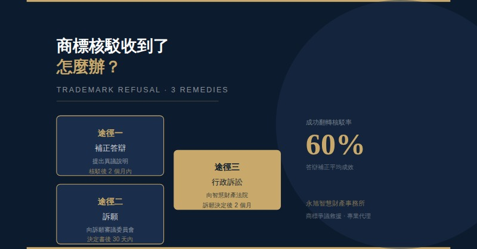
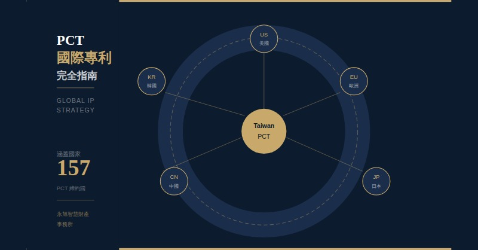

專利
專利說明書撰寫的 5 個關鍵要素：如何讓您的發明獲得最大保護
一份高品質的專利說明書是保護發明的核心武器。本文從技術問題界定、先前技術說明、發明摘要、Claim 佈局策略到圖式要求，逐一解析五大關鍵要素，協助您理解為什麼說明書品質直接決定專利的保護廣度與未來訴訟的勝算。
由永旭主持團隊親撰，結合逾 25 年實務經驗，分享專利、商標、著作權的實戰知識
一份高品質的專利說明書是保護發明的核心武器。本文從技術問題界定、先前技術說明、發明摘要、Claim 佈局策略到圖式要求，逐一解析五大關鍵要素，協助您理解為什麼說明書品質直接決定專利的保護廣度與未來訴訟的勝算。

收到商標核駁通知，並不代表商標申請就此終結。本文詳細介紹答辯、申復、訴願三條救濟路徑的適用時機、期限與策略要點，並說明各階段的成功關鍵，讓您在面臨核駁時能做出最佳判斷，把握每一次翻轉機會。

PCT（專利合作條約）是進軍國際市場最重要的智財工具之一。本文說明 PCT 申請流程、時程優勢、費用結構，以及如何在 18 個月的優先期內做出最佳的各國進入決策，幫助台灣企業以最具成本效益的方式在 156 個國家取得專利保護。
閱讀文章是了解智財的第一步；真正保護您的創新與品牌，需要因案制宜的專業策略。歡迎預約與所長直接諮詢，讓 25 年實務經驗為您量身規劃。